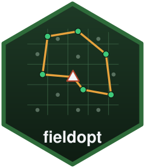

Schedule the field work of several teams from several bases
Source:R/schedule.R
schedule_fieldwork.RdAssigns the units to visit to bases (depots), routes the units of each
base under the daily limits with route_fieldwork() (one route is one
team-day), and distributes the routes over the teams of the base and the
days available, longest routes first, so that the teams finish as evenly
as possible. The result is a calendar: which team visits which units on
which day, and whether the work fits in the days available.
Usage
schedule_fieldwork(
matrix,
units,
teams,
days,
bases = NULL,
max_length = Inf,
max_stops = Inf,
service_time = 0,
assign = c("nearest", "balanced"),
cost_model = NULL,
iterations = 100,
alpha = 0.3,
seed = 1
)Arguments
- matrix
A
travel_matrix()holding the units and the bases.- units
Names of the units to visit.
- teams
Named vector: number of teams per base (names are units of the matrix that act as bases). A single unnamed number with one base is accepted when
basesis given.- days
Number of working days available.
- bases
Optional names of the bases when
teamsis unnamed.- max_length, max_stops, service_time
Daily limits of a route, as in
route_fieldwork().- assign
"nearest"or"balanced"(see Details).- cost_model
Optional
field_cost_model(); itsper_routecost is charged once per team-day.- iterations, alpha, seed
Solver settings of
route_fieldwork().
Value
An object of class fieldopt_schedule: calendar (a tibble with
one row per route: base, team, day, route, stops, travel,
duration, and units as a list column), assignment (unit, base),
routes (the route_fieldwork() solution of each base), summary
(per base: units, teams, routes, days needed, days available, whether
it fits), fits and cost.
Details
Units go to their nearest base by default. With assign = "balanced",
units are moved from bases whose expected number of routes exceeds the
team-days available to the base with spare capacity that costs them the
least extra travel; the final routing decides the actual number of routes,
so the calendar still reports when a base is short of days.
Examples
set.seed(5)
pts <- data.frame(unit = c("base1", "base2", paste0("s", 1:30)),
x = c(2, 8, runif(30, 0, 10)), y = c(2, 8, runif(30, 0, 10)))
m <- travel_matrix(pts, method = "euclidean")
sch <- schedule_fieldwork(m, units = paste0("s", 1:30), teams = c(base1 = 2, base2 = 1),
days = 4, max_stops = 4, iterations = 30)
sch
#>
#> ── Field schedule ──────────────────────────────────────────────────────────────
#> 30 units, 2 bases, 3 teams, 4 days available: the work does not fit.
#> "base1": 11 units, 2 teams, 3 routes, 2 of 4 days.
#> "base2": 19 units, 1 team, 5 routes, 5 of 4 days (short of days).
sch$calendar
#> # A tibble: 8 × 8
#> base team day route stops travel duration units
#> <chr> <chr> <int> <int> <int> <dbl> <dbl> <list>
#> 1 base1 base1-1 1 2 4 14.4 14.4 <chr [4]>
#> 2 base1 base1-2 1 1 4 10.8 10.8 <chr [4]>
#> 3 base1 base1-2 2 3 3 6.14 6.14 <chr [3]>
#> 4 base2 base2-1 1 3 4 13.8 13.8 <chr [4]>
#> 5 base2 base2-1 2 5 4 13.7 13.7 <chr [4]>
#> 6 base2 base2-1 3 4 4 10.7 10.7 <chr [4]>
#> 7 base2 base2-1 4 2 4 8.87 8.87 <chr [4]>
#> 8 base2 base2-1 5 1 3 8.56 8.56 <chr [3]>